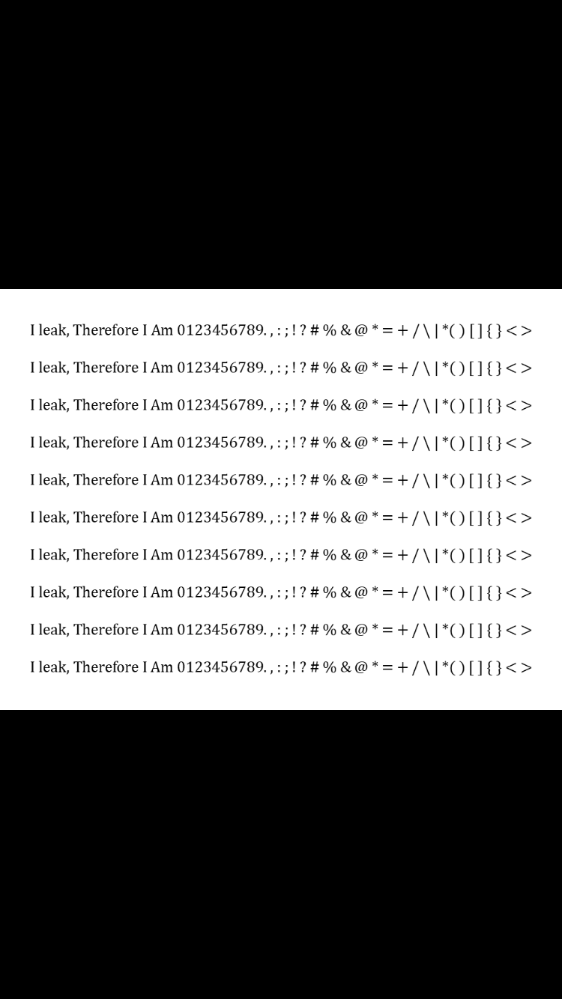
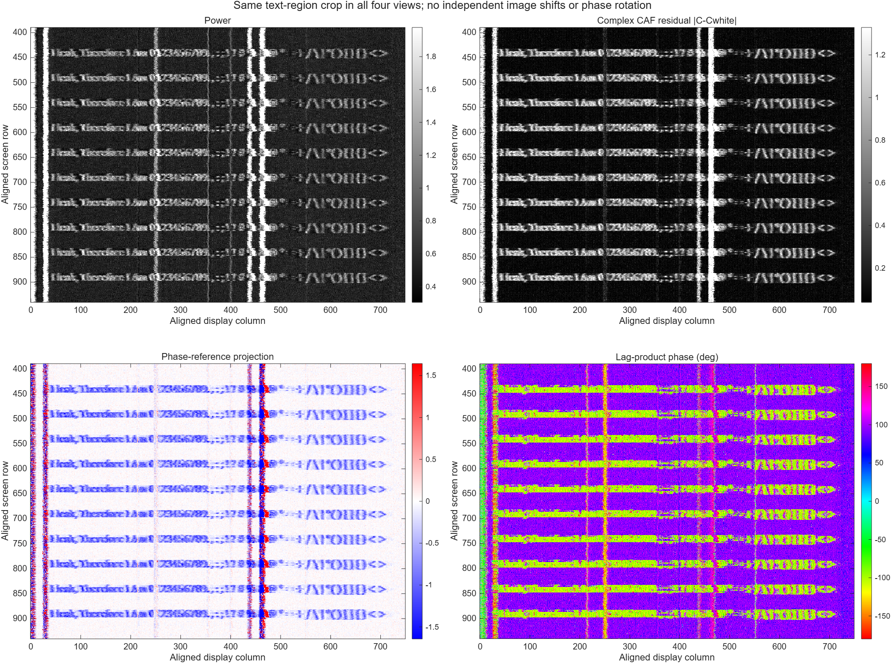
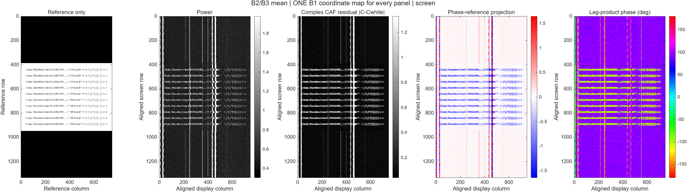
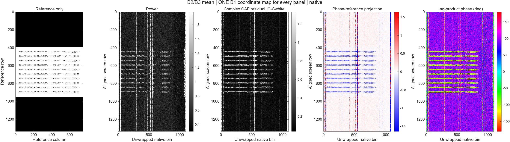

제공된 원본 화면


원본 PNG네 복원본에 하나의 화면 좌표 변환을 공통 적용했습니다. 같은 행·같은 가로 위치를 나란히 비교할 수 있습니다.
좌표는 학습 구간 B1에서 정하고 B2/B3에도 고정합니다. 영상마다 별도로 위치를 맞추지 않았으며, 원본의 문자 픽셀을 복원본에 삽입하지 않았습니다.
750열 표시는 알려진 원본을 이용해 추정한 활성 폭을 공통으로 잘라 표시한 것입니다. 실제 픽셀 클록이나 MIPI bit를 복호화한 결과는 아닙니다.


